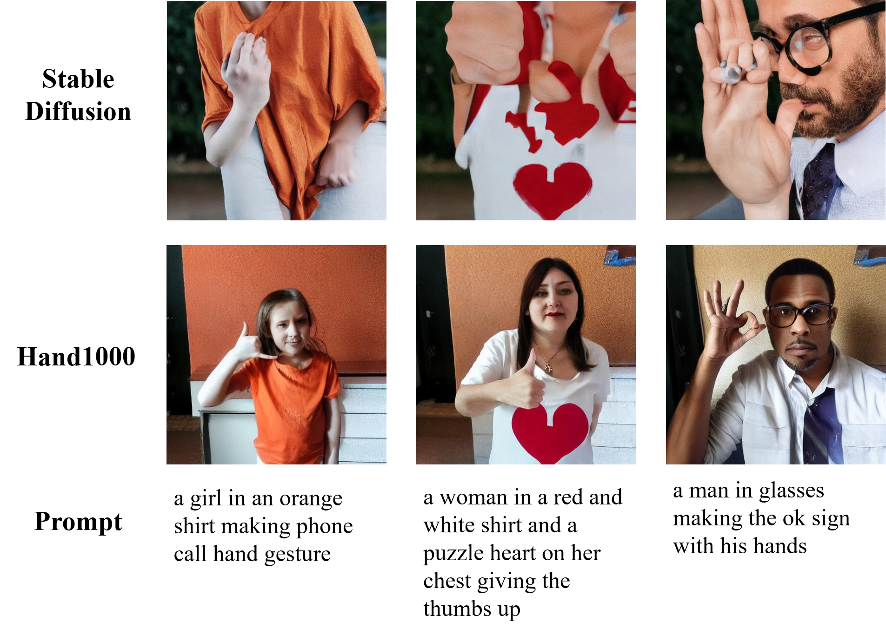
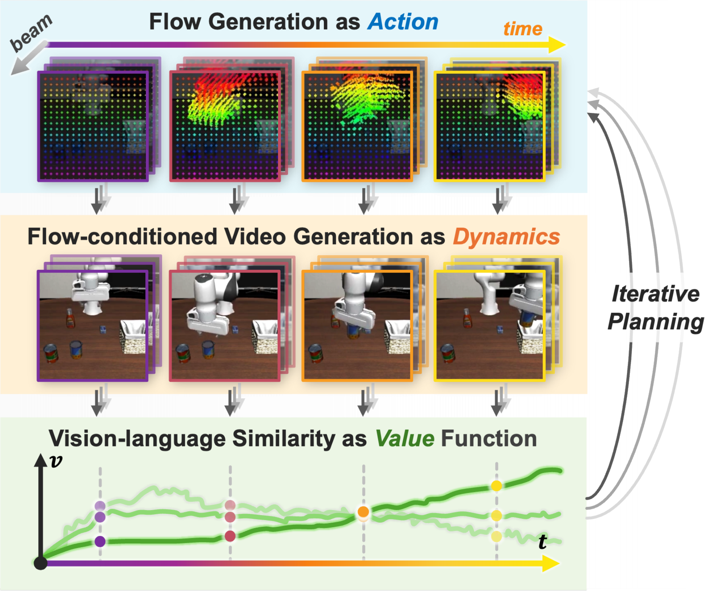
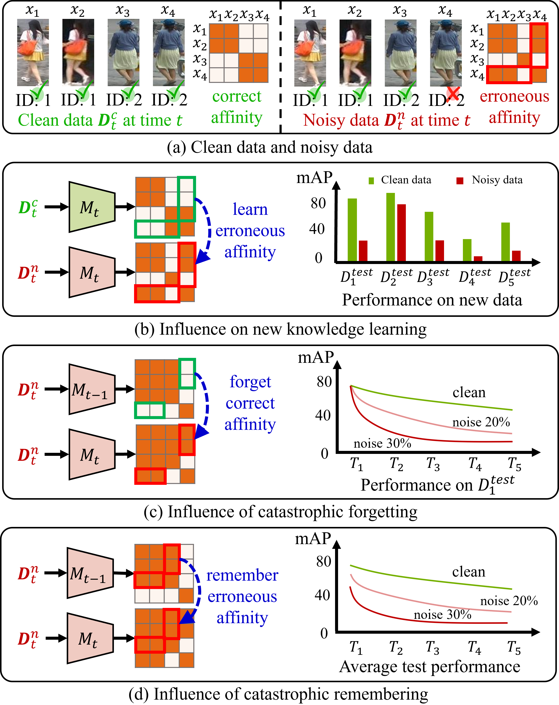

Haozhuo Zhang 张浩卓
Undergraduate Student
School of Electronics Engineering and Computer Science
Peking University
Email: 2100013132@stu.pku.edu.cn
Google Scholar|
|
Haozhuo Zhang 张浩卓 Undergraduate Student School of Electronics Engineering and Computer Science Peking University Email: 2100013132@stu.pku.edu.cn Google Scholar |
|
I am a senior undergraduate student majoring in Computer Science at Peking University, dedicated to research on robotics and computer vision, as well as their interdisciplinary fields. My specific research interests include vision and language-based robot manipulation, control and navigation, diffusion models, AIGC, and LLM.
|
 |
Hand1000: Generating Realistic Hands from Text with Only 1,000 Images |
 |
FLIP: Flow-Centric Generative Planning for General-Purpose Manipulation Tasks |
 |
Mitigate Catastrophic Remembering via Continual Knowledge Purification for Noisy Lifelong Person Re-Identification |